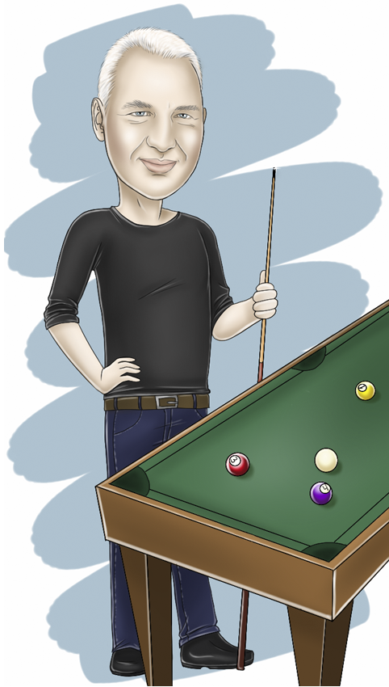
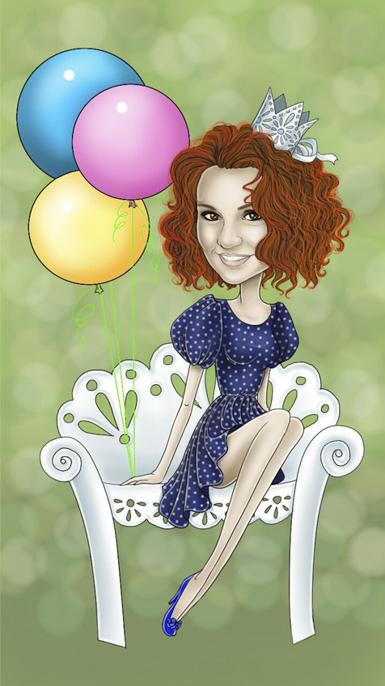
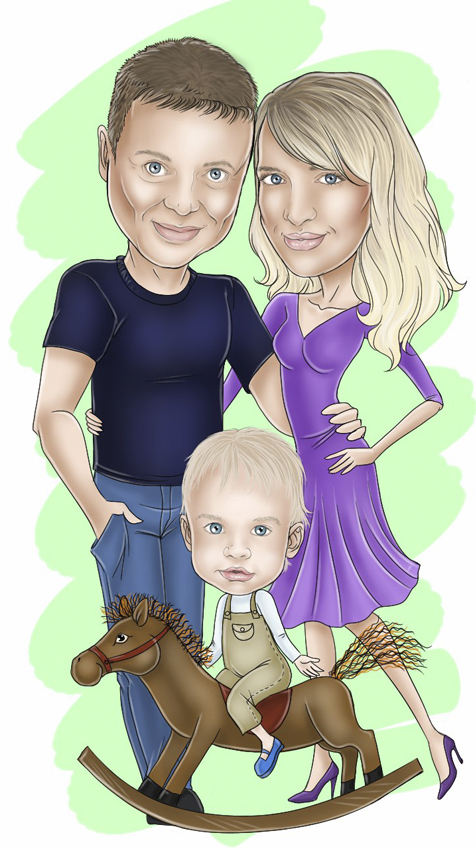
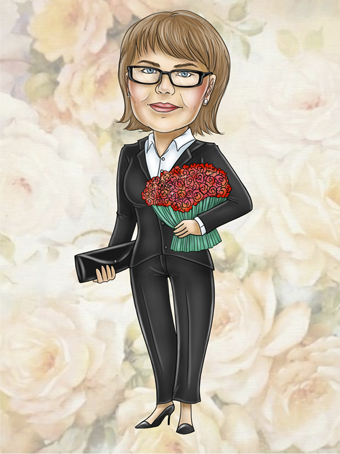
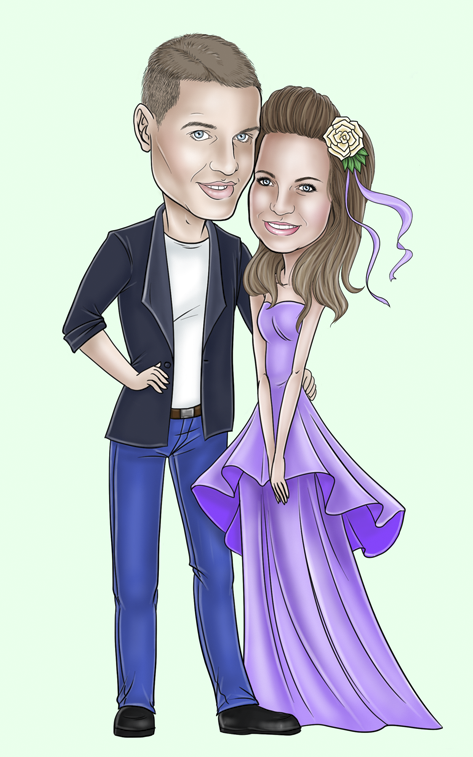
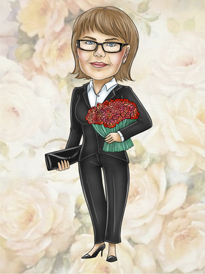
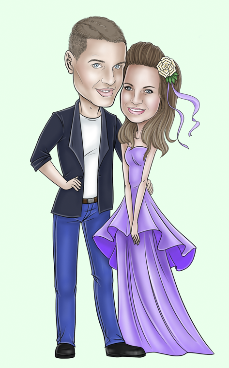

Шарж
Разновидность карикатуры, сатирическое или добродушно-юмористическое изображение. На шаржах могут быть изображены люди, животные и различные предметы. Хотя шаржи и принято часто сравнивать с карикатурами, они в отличие от нее, не высмеивают недостатки героя. Шаржи добродушны, заставляют людей улыбаться, но никак не посмеяться над изображаемыми.

Что такое шарж?
Шарж - это нарисованный с юмором, добродушный рисунок, изображающий человека или животное. Шаржист рисует так, чтобы хотелось улыбнуться и порадоваться, но не посмеяться над человеком.
Виды шаржа
Портретный: рисуется только чей-либо портрет.
Сюжетный: создается определенный сюжет с
поступками, увлечениями какого-то лица.
Групповой: изображается сразу несколько человек,
причём они объединены на рисунке общей идеей.
Предметный: изображается какой-либо предмет,
например, любимый автомобиль или компьютер.
Шаржи на животных: рисуются домашние любимцы.
  
История происхождения шаржа
Шаржи произошли от карикатур, которые гротескно подчеркивают, несколько преувеличивая, определенные черты какого-то человека, группы людей или их действий. Но, в отличие от карикатуры, которая более иронична, может быть социально или политически острой, шарж - добродушен, он скорее похож на дружескую усмешку, которая ставит своей целью порадовать человека.
Для чего могут понадобиться шаржи?
Это может быть замечательный подарок другу, начальнику отдела или молодоженам на свадьбу. Оформленный в рамке под стеклом, такой шарж останется надолго как памятный подарок. Шарж может быть черно-белым, а может быть цветным. В основу шаржа художник шаржист может положить какую-то оригинальную идею, увлечения определенного человека.
  
 
Стоимость шаржа
1 человек - 750 руб.
2 человека (вместе) - 1300 руб.
3 человека (вместе) - 1700 руб.
2 взрослых и 1 ребёнок - 1500 руб.
Дополнительные детали (фон, тематика, животные
и пр.) - 250 руб.
**Готовая работа высылается по электронной почте.